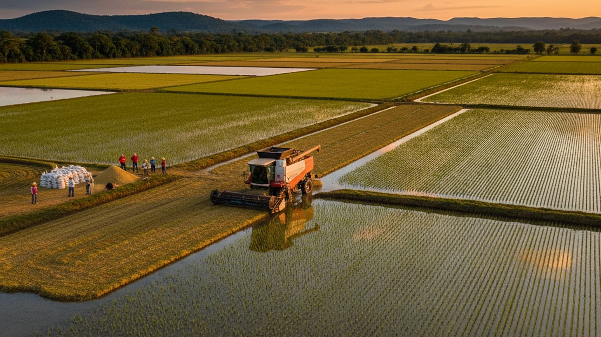

Desafio 1 · Bioeconomia & Energia
Transformar a palha, a casca e o esterco que a propriedade já gera em energia mais barata ou renda nova, com o payback de cada rota na mão.
O problema
Na safra, a bomba de irrigação passa meses ligada. Ao lado, a energia e a renda que poderiam vir do resíduo ficam no chão. O produtor tem a matéria-prima, mas não a aproveita.
O produtor não sabe quanto o resíduo vale, então nenhuma conversa com comprador, banco ou fornecedor começa. E as usinas pedem escala que uma propriedade sozinha não alcança, sem ninguém para juntar o volume dos vizinhos. É um problema de informação e coordenação, não de tecnologia.
A ideia
Uma ferramenta que dá o número que falta ("seus resíduos valem R$ X por ano"), compara as rotas pelo payback e junta os vizinhos no mapa até o volume atingir a escala de uma rota que se paga.
Como funciona
Com 5 perguntas, estima as toneladas por ano de palha, casca e esterco e o potencial energético. Dá o "quanto você tem e quanto vale".
Compara vender, briquete, queima para secagem própria e biodigestor, com investimento, R$/ano e payback, ordenados do que se paga mais rápido.
Se nenhuma rota fecha sozinha, o mapa soma o volume dos vizinhos num raio até atingir a escala de uma rota compartilhada.
Exemplo ilustrativo · 300 ha de arroz
Quando a rota não fecha sozinha
No exemplo de Alegrete, no raio de 20 km nove vizinhos mais a sua propriedade somam 10.760 t/ano e atingem a escala de uma usina ou briquetagem compartilhada (meta de 5.000 t/ano).
A geração distribuída compartilhada deixa um consórcio gerar energia numa usina e usar os créditos nas contas dos membros, inclusive as bombas de irrigação.
Por que acreditar
Coeficientes da literatura (Embrapa, IRGA) e dados do desafio, com faixa e fonte visíveis e editáveis.
Página leve, abre no celular, preenchível em minutos por um técnico da Emater/Sebrae em visita.
Começa pela rota individual e pela venda conjunta, antes da usina compartilhada. Não prevê preço nem concede crédito.
Nosso MVP e o impacto
O protótipo já roda no celular, com inventário, payback e o mapa do consórcio. O próximo passo é levá-lo a quem tem o resíduo na porteira.
O produtor já tem a matéria-prima. Só não sabe quanto ela vale nem com quem juntar. O Energia da Porteira dá esse número em 3 minutos e junta os vizinhos até a conta fechar.